[To catch up, here are Days 1 and 2-A and 2-B]
On Thursday, the energy we peeked at the night before turned electrifying the moment we walked out into the city streets, as the throngs of Catholics were all heading to Mass. Every day of a Catholic pilgrimage begins with worshipping our Lord God, and what better way to begin the day than to know that Jesus will be present, body, blood, soul and divinity, with you?

I was heartened to see this group of Spanish-speaking Catholics reciting the Rosary along their way. What joy they exuded. It lit a fire in Joanne’s and my heart that could not be extinguished. The day was filled with awe-inspiring moments, unlike anything I’ve experienced previously.
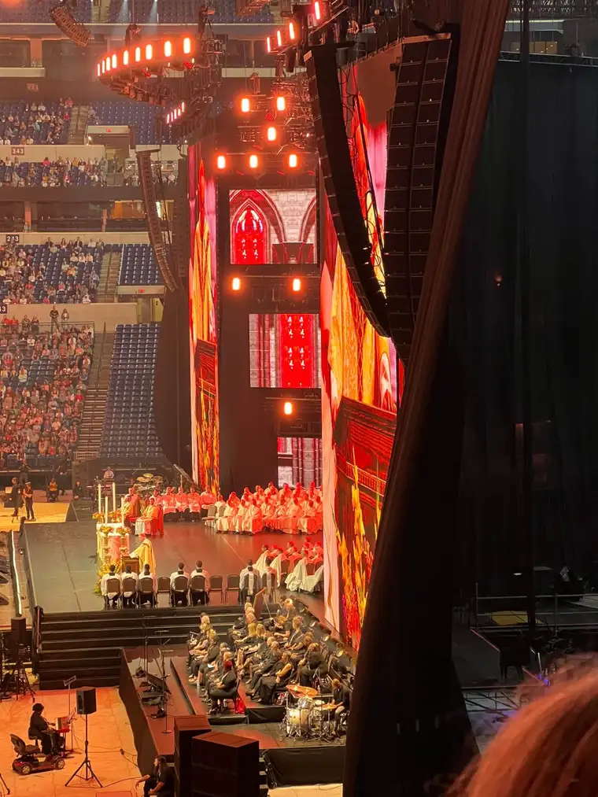
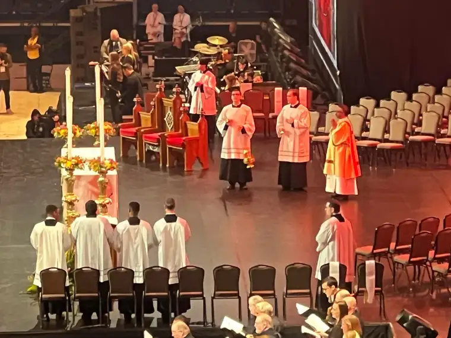
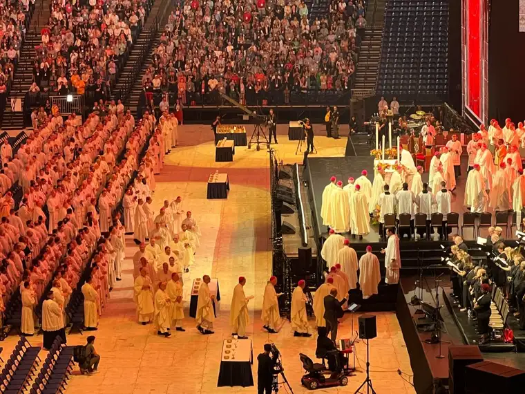
First, Mass with Cardinal Dolan of New York. We slipped into a spot to the side of the stage/altar, wherever we could find a spot amid the many, many people entering. It was wild just watching the procession of Jesus and his servants into Mass.

My takeaway quote from his homily: “They tried to kill us. God saved us. Let’s eat!” This was a line he’d heard from a Jewish rabbi friend who was boiling down the Jewish faith in a nutshell; a sentiment we can certainly borrow!
“We hunger. We are famished to eat this sacred meal,” Cardinal Dolan continued. “Our stomachs growl as we are starved for this manna in the desert.”
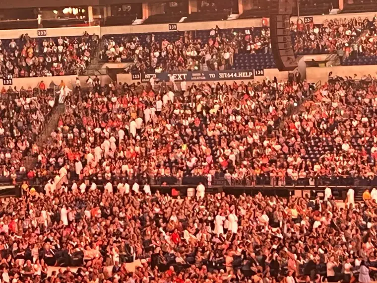
The effect of us eating the Body of Christ, he added, is “to change us into what we believe. We have him within us.”
He affirmed that the goal of the entire congress would be “to recover the centrality of the Eucharist.”
“How blessed are those who are called to the supper of the Lamb,” he concluded. And to that I could feel myself saying, with exuberance, “AMEN!”
Our morning session after Mass would be hearing from Monsignor James Shea, president of the University of Mary. Having heard him speak before, I knew we were in for a treat, and I hoped to find a better seat for that. As Mass ended, some of the crowd departed to go to sessions elsewhere, so seats on the floor opened up. What a difference, from having just been much further away, and now, to find ourselves just a few rows back from the stage! We felt surrounded and held and inspired.
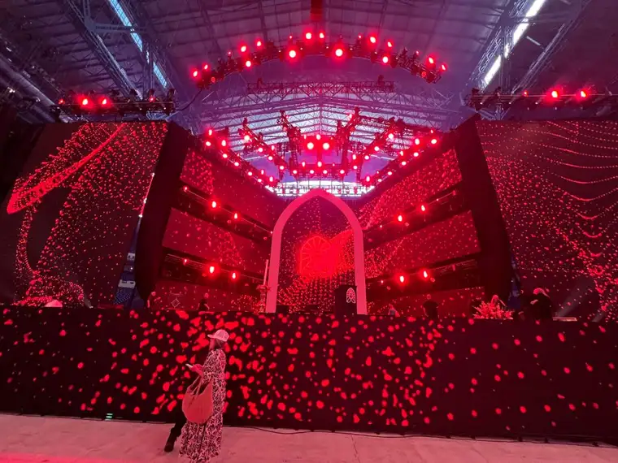
While waiting for the opening music and speakers, we met some beautiful Servants of the Pierced Hearts of Jesus and Mary sisters (more here). Simply beautiful! Their foundress, Mother Adele, would lead us into the end of the congress days from now. What a joy it was to meet them!
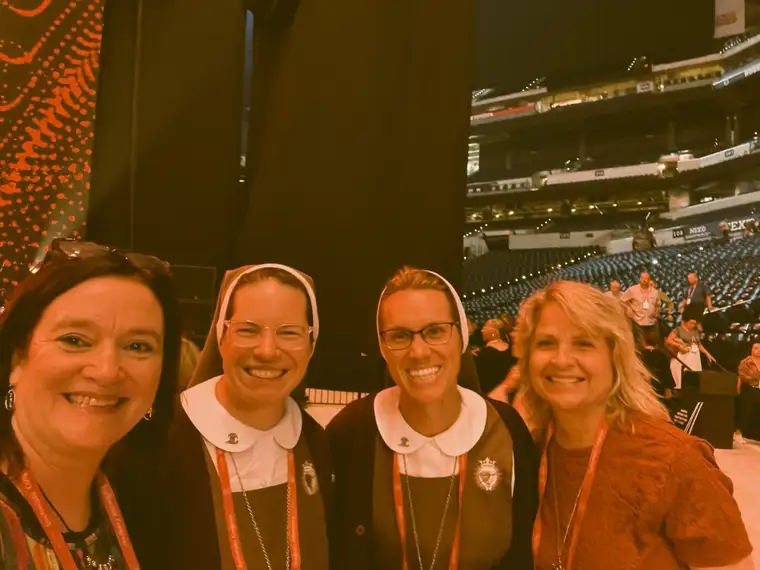
Our hearts were prepared with the help of Catholic musician Sarah Kroger. What a beautiful voice and presence. Her voice resonance reminds me of Amy Grant. Very soothing. Heartfelt. Here’s my favorite of hers from the congress: https://www.youtube.com/watch?v=Ranu8DzHYIU
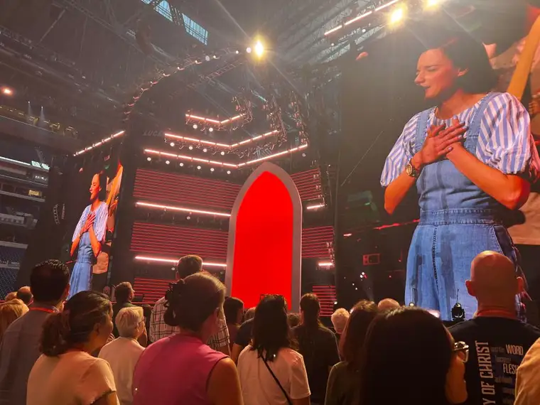
Also speaking to us was Sr. Marie Veritas, who quoted from St. Seraphim: “A soul at peace will save 1,000 souls.” Wow!
All this got us ready to receive the words of Monsignor Shea, the opening keynote for the Encounter track. This man impresses me so much. He is a master storyteller, who tells of God’s love for us, and how that divine plan was poisoned, and how we can return to the design of love, with such passion and heart. I could listen to him for hours. Please, if you have some time soon, listen to his talk (here). You will not regret it!
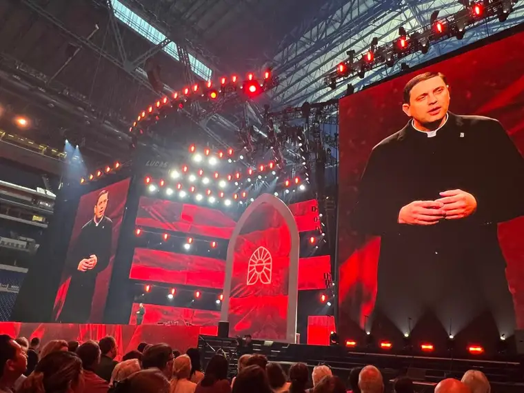
But to sum up a few key sentiments now: “The central question of every human life is: Where will I go for my sustenance…will I eat good food or poison?”
And when he said these final words, before rushing off the stage, chills went through my body: “Now, let us rush out into the starving world and tell everyone: ‘We’ve found the food!!!'” That will long stay with me! Yes, we have found the food, the pearl of great price!
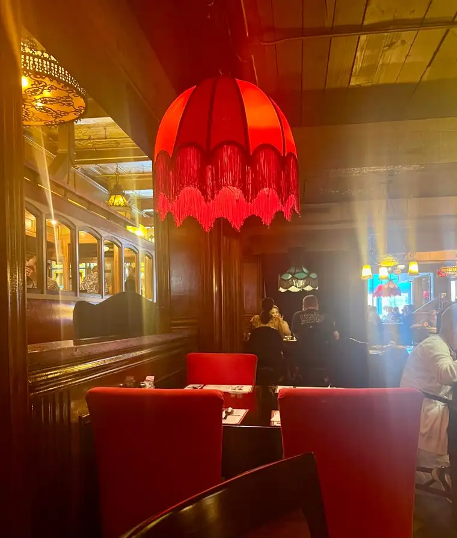
From there, we had lunch plans at the Old Spaghetti Factory. I had not been to the OSF since our days early in marriage living in the Seattle area. I have always wanted a redo, and finally got it with a friend I’d met online through a Catholic Facebook group for mothers who pray for their children. Not only did Joanne and I get to meet Mary, but her sister and a friend joined us. And the meal was delicious!
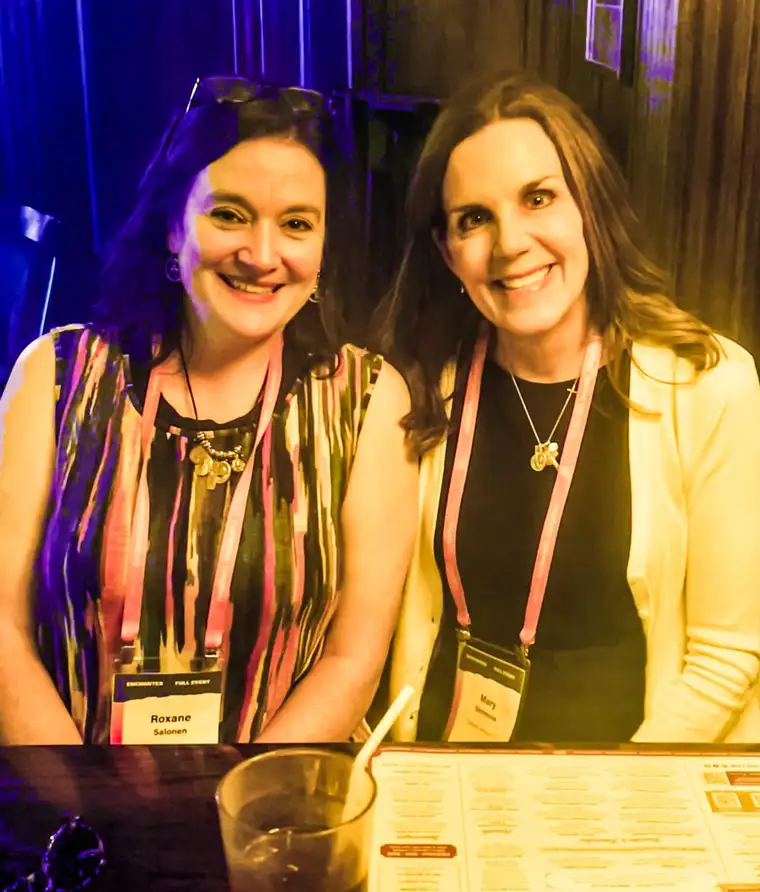
Yes, this congress was as much about connection as anything; God bringing his children who love him so much together! I’d also connected beforehand, on the bus, with Deanna Bartalini, a Catholic writer colleague with whom I’ve worked online but had never met in person. So, for an early dinner, Joanne and I were blessed with a visit with Deanna at the Yard House, not far from our hotel. Deanna said she’d be heading to the evening session early, knowing Fr. Mike Schmitz would be there. She offered to save us seats since we would not be able to make it there as quickly. Things filled in fast so saving seats was a bit of a sacrifice, but we are ever so grateful that we had a decent spot for that session (Thank you Deanna!).

Fr. Mike wasn’t the only treasure of the evening. Mother Olga, a Catholic convert from a Muslim country, had some beautiful quotes to0, pointing to Jesus’ messages to us, even in suffering.
“Even on the cross, we can still choose to love.”
“I love my broken Jesus.”
“At every Mass, the Father is glorified and the world is sanctified.” I THINK that one came from Mother Olga, but my notes aren’t clear. Either way, yes yes yes!
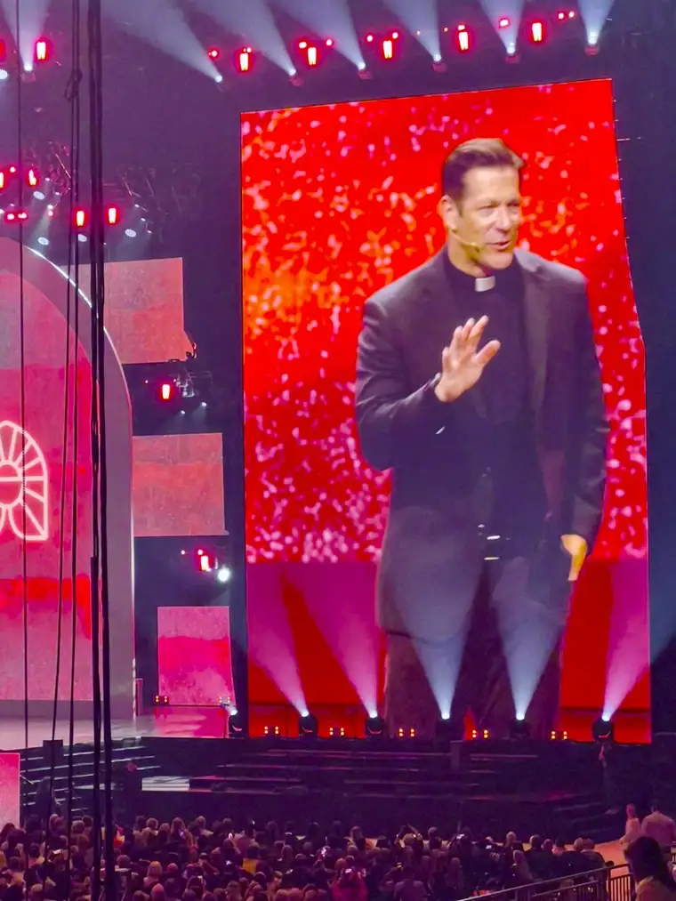
Fr. Mike was, naturally, a powerful presence, reminding us that the remedy to a hurting world is love. And that “You can never have a revival without repentance.”
“I don’t need more knowledge,” he said, “But I need more love,” adding, “Knowledge can make us great, but only love can make a saint.”
Finally, we had a chance to see some dear North Dakotans, mother and father of Servant of God Michelle Duppong, on a national, no, world, platform. This was honestly my only disappointed of the whole congress, however, because an opportunity was missed. The congress was being so careful not to make too much of a holy person who is still under investigation for sainthood that hardly anything about Michelle was mentioned.
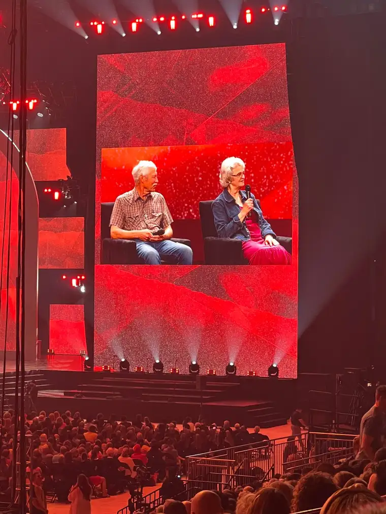
The caution, in my humble opinion, went too far, and the main message was lost. Even Michelle’s parents, who we met earlier, said they would have rather talked about their daughter than about themselves. It was beautiful to hear from them, salt of the earth people that they are. But the reason they were there was masked in an abundance of caution that left us wondering. God bless them for saying yes, even so! There will be more from them in the future, and it was a delight to meet them earlier that day in the exhibition hall.
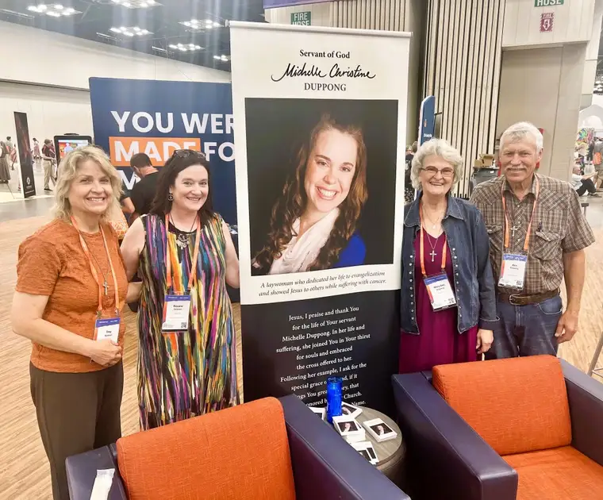
The day didn’t end there. Here’s a little taste of the gift of the evening’s end: https://www.youtube.com/watch?v=B6aWRe3g1Ro
There is so much more to share as we continue our adventure in Indianapolis, running toward Jesus. Stay tuned!